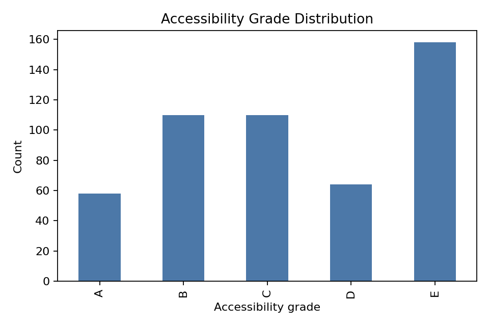
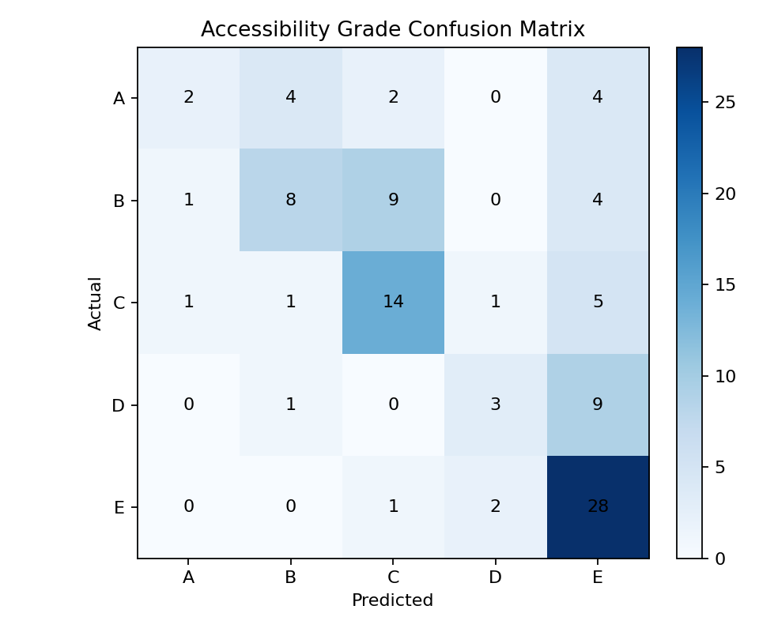
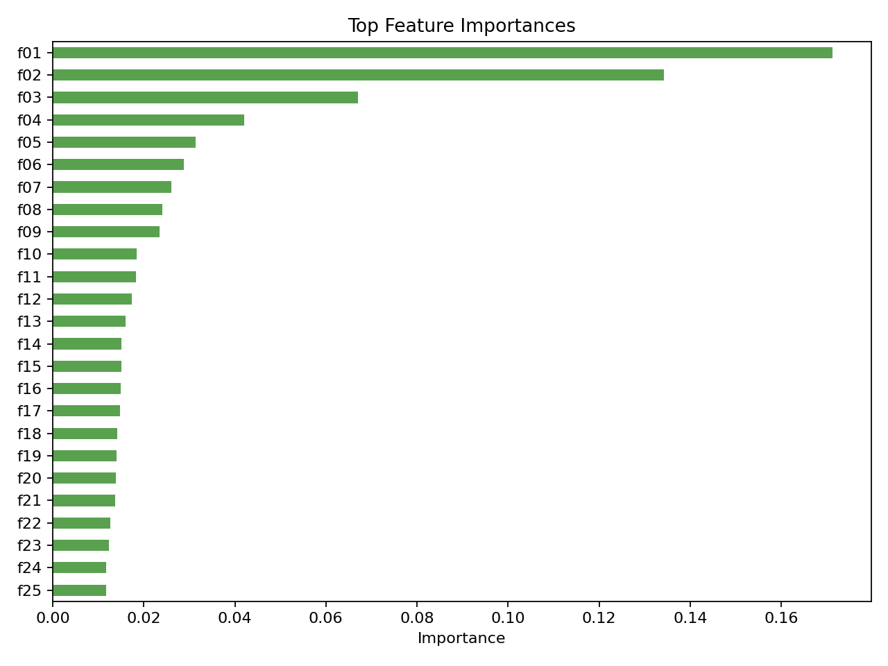

장애인 접근성 등급 진단 모델 구현 결과
생성 시각: 2026-06-09T17:13:52.928492+00:00
최종 모델: XGBoostClassifier / macro F1: 0.4570 / accuracy: 0.5500
이번 구현 범위는 서비스 계획의 1~4번이며, FastAPI, Streamlit, DVC, Evidently 단계는 진행하지 않았다.
Step 1. 데이터셋 기준 확정
입력 파일
- 원본: `data/raw/ap_whellchair_hall_total.csv`
- 전처리 결과: `data/processed/accessibility_dataset.csv`
데이터 크기
| 항목 | 값 |
|---|
| 원본 행 수 | 500 |
| 전처리 후 행 수 | 500 |
| 전처리 후 컬럼 수 | 23 |
사용 원천 컬럼
- 공연 정보: `제목`, `공연시작일`, `공연종료일`, `장르`, `구분`, `공연장`, `대관 기업명`
- 좌석/예매 정보: `휠체어석예매수`, `total/총좌석수`, `일반석`, `장애인석`
결측치 점검
| column | missing |
|---|
| title | 0 |
| start_date | 0 |
| end_date | 0 |
| year | 0 |
| month | 0 |
| day_of_week | 0 |
| is_weekend | 0 |
| duration_days | 0 |
| booking_lead_days | 0 |
| genre | 0 |
| genre_group | 0 |
| venue | 0 |
| venue_type | 0 |
| organizer_type | 0 |
| organizer | 0 |
| start_time | 0 |
| wheelchair_booking_count | 0 |
| total_seats | 0 |
| general_seats | 0 |
| wheelchair_seats | 0 |
| wheelchair_seat_ratio | 0 |
| wheelchair_booking_rate | 0 |
| accessibility_grade | 0 |
Step 2. 타겟 라벨 설계
타겟 변수
- 타겟: `accessibility_grade`
- 기준값: `wheelchair_booking_rate = wheelchair_booking_count / wheelchair_seats`
등급 기준
| 등급 | 기준 |
|---|
| A | `wheelchair_booking_rate >= 1.00` |
| B | `0.50 <= wheelchair_booking_rate < 1.00` |
| C | `0.25 <= wheelchair_booking_rate < 0.50` |
| D | `0.10 <= wheelchair_booking_rate < 0.25` |
| E | `wheelchair_booking_rate < 0.10` |
원래 구상한 `0건이면 E` 방식은 현재 학습 파일의 `휠체어석예매수`가 모두 1 이상이라 E 등급이 사라지는 문제가 있었다.
따라서 5등급 분류가 가능하도록 휠체어석 대비 예매율 구간을 기준으로 라벨링했다.
등급별 샘플 수
| accessibility_grade | count |
|---|
| A | 58 |
| B | 110 |
| C | 110 |
| D | 64 |
| E | 158 |
예매율 요약
| value |
|---|
| count | 500.0 |
| mean | 0.40106515151515143 |
| std | 0.5105575400138029 |
| min | 0.041666666666666664 |
| 25% | 0.08333333333333333 |
| 50% | 0.25 |
| 75% | 0.5 |
| max | 4.3 |
Step 3. Feature Engineering
Feature 목록
| feature | 설명 | 사용 |
|---|
| booking_lead_days | 공연시작일 - 집계최초일자. 현재 파일에서는 첫 집계일을 첫 예매일 대체값으로 사용 | 학습 |
| genre_group | 장르 정규화 결과 | 학습 |
| venue_type | 공연장명 기준 대형/중형/소극장 매핑 | 학습 |
| is_weekend | 공연시작일 기준 주말 여부 | 학습 |
| duration_days | 공연종료일 - 공연시작일 + 1 | 학습 |
| organizer_type | 기획 주체. 대관/기획 등 | 학습 |
| organizer | 대관 기업 또는 기획 주체명 | 학습 |
| start_time | 현재 원천 파일에 시간이 없어 0으로 고정한 placeholder | 학습 |
| wheelchair_booking_count | 휠체어석 예매 수. 타겟 산출에 직접 사용 | 학습 제외 |
| total_seats | 공연장 전체 좌석 수 | 분석/대시보드용. 학습 제외 |
| general_seats | 일반 판매석 수 | 분석/대시보드용. 학습 제외 |
| wheelchair_seats | 장애인석 수. 타겟 산출의 분모 | 분석/대시보드용. 학습 제외 |
| wheelchair_seat_ratio | 전체 좌석 중 휠체어석 비율 | 분석/대시보드용. 학습 제외 |
| wheelchair_booking_rate | 휠체어석 예매율. 타겟 라벨 산출값 | 학습 제외 |
학습에서 제외한 좌석 정보
`wheelchair_booking_count`, `total_seats`, `general_seats`, `wheelchair_seats`, `wheelchair_seat_ratio`, `wheelchair_booking_rate`는 모델 학습 feature에서 제외한다.
이 값들은 접근성 등급 산출에 직접 연결되거나 좌석 수 신호가 강한 값이라 모델이 공연 특성 대신 사후 예매/좌석 정보를 보고 맞추는 문제가 생길 수 있기 때문이다.
주요 범주 분포
장르 그룹
| genre_group | count |
|---|
| 클래식 | 410 |
| 오페라 | 21 |
| 발레 | 16 |
| 연극 | 15 |
| 뮤지컬 | 15 |
| 기타 | 9 |
| 기타(복합) | 6 |
| 이벤트콘서트 | 5 |
| 무용 | 2 |
| 크로스오버 | 1 |
공연장 규모
| venue_type | count |
|---|
| 대형 | 268 |
| 중형 | 145 |
| 소극장 | 87 |
Step 4. 접근성 등급 분류 모델
문제 정의
- 문제 유형: 다중 분류
- 타겟 변수: `accessibility_grade`
- 등급: A~E
- 주 평가 지표: macro F1
학습 Feature
| feature |
|---|
| booking_lead_days |
| genre_group |
| venue_type |
| is_weekend |
| duration_days |
| organizer_type |
| organizer |
| start_time |
학습 제외 컬럼
아래 컬럼은 좌석 수 또는 타겟 산출에 직접 연결되는 값이므로 모델 feature에서 제외했다.
| excluded_column |
|---|
| wheelchair_booking_count |
| total_seats |
| general_seats |
| wheelchair_seats |
| wheelchair_seat_ratio |
| wheelchair_booking_rate |
등급 분포
| count |
|---|
| A | 58 |
| B | 110 |
| C | 110 |
| D | 64 |
| E | 158 |
데이터 분할
- 방식: stratified train/test split
- test_size: 0.2
- random_state: 42
- 학습 행 수: 400
- 검증 행 수: 100
데이터 수가 500행으로 작아 각 등급이 검증 세트에 포함되도록 stratified split을 사용했다.
모델 비교
| model | accuracy | f1_macro |
|---|
| XGBoostClassifier | 0.55 | 0.457 |
| ExtraTreesClassifier | 0.52 | 0.4479 |
| RandomForestClassifier | 0.52 | 0.4479 |
| LightGBMClassifier | 0.46 | 0.4068 |
| DummyClassifier | 0.31 | 0.0947 |
후보 알고리즘 구현 상태
| algorithm | status |
|---|
| RandomForest | 구현 및 학습 완료 |
| ExtraTrees | 구현 및 학습 완료 |
| XGBoost | 구현 및 학습 완료 |
| LightGBM | 구현 및 학습 완료 |
최종 선택 모델
- 모델: `XGBoostClassifier`
- 저장 경로: `artifacts/accessibility_classifier.joblib`
- 메트릭 저장 경로: `reports/accessibility/accessibility_metrics.json`
상위 Feature Importance
| rank | feature | importance |
|---|
| f01 | cat__venue_type_중형 | 0.17122198641300201 |
| f02 | cat__venue_type_대형 | 0.13418793678283691 |
| f03 | cat__venue_type_소극장 | 0.06697431951761246 |
| f04 | cat__genre_group_클래식 | 0.04212233051657677 |
| f05 | num__duration_days | 0.03146527335047722 |
| f06 | cat__organizer_영음예술기획 | 0.028804663568735123 |
| f07 | cat__organizer_크레디아뮤직앤아티스트 | 0.026065643876791 |
| f08 | cat__genre_group_발레 | 0.024142613634467125 |
| f09 | cat__organizer_주식회사 목프로덕션 | 0.023487398400902748 |
| f10 | cat__organizer_위드클래식 | 0.018390147015452385 |
산출물
- 혼동행렬: `reports/accessibility/accessibility_confusion_matrix.png`
- Feature importance CSV: `reports/accessibility/accessibility_feature_importance.csv`
- Feature importance 이미지: `reports/accessibility/accessibility_feature_importance.png`
시각화 산출물
등급 분포

혼동행렬

Feature Importance
